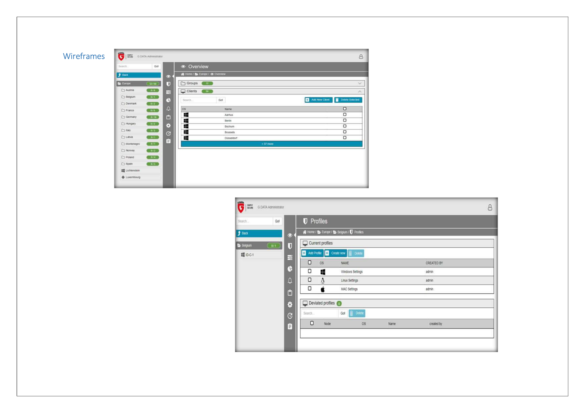
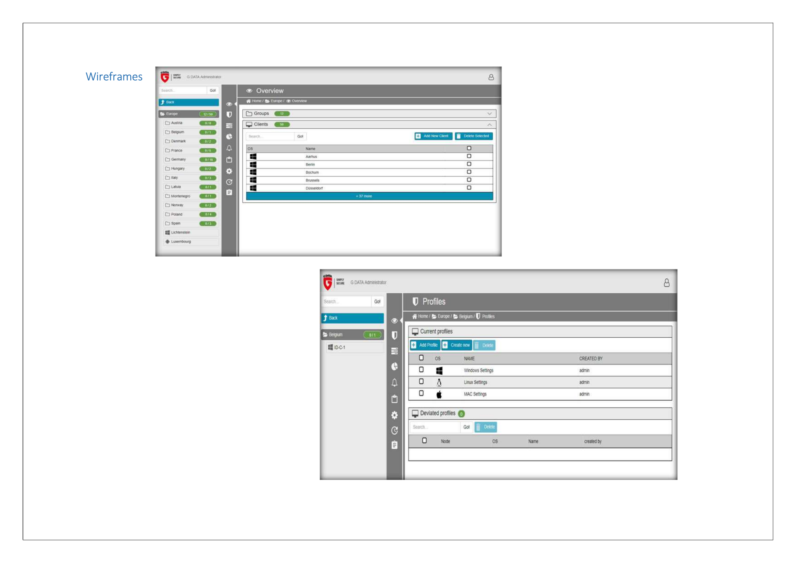

Browser Extension: Enhancing User Productivity
Developing a seamless browser extension to improve workflow and user interaction.
Project Overview
This project involved the conception, design, and development of a browser extension aimed at enhancing user productivity and streamlining specific online workflows. The extension provided users with quick access to tools and information, reducing context switching and improving overall efficiency.
My Role & Responsibilities
- **Product Vision & Strategy:** Defined the product vision, roadmap, and feature set for the browser extension based on market research and user needs.
- **User Research & Design:** Conducted user research, created user flows, wireframes, and prototypes to ensure an intuitive and seamless user experience.
- **Cross-Functional Leadership:** Led a cross-functional team of developers and designers, overseeing the entire product development lifecycle from ideation to launch.
- **Performance & Analytics:** Monitored key performance indicators and user feedback to iterate on the product and drive continuous improvement.
Key Challenges
- Ensuring compatibility and optimal performance across various web browsers.
- Designing a non-intrusive yet highly functional user interface within the browser environment.
- Balancing feature richness with performance and security considerations.
Solutions & Impact
The browser extension successfully integrated into users' daily workflows, providing significant time savings and productivity gains. User feedback indicated high satisfaction with the ease of use and the value provided by the extension's features.
The project demonstrated a strong understanding of user needs and technical constraints, resulting in a well-received and impactful product.
Visuals & Prototypes
Below are some visual representations and prototypes from the Browser Extension project. These illustrate the interface design, workflow, and key features developed to enhance user productivity.
 


Learnings & Future Directions
This project highlighted the importance of continuous user feedback and agile development in rapidly evolving browser environments. Future enhancements could include AI-driven personalization and deeper integration with other productivity tools.